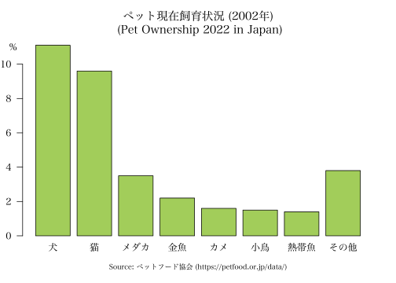

The kanjistat package offers tools for working with Japanese kanji characters, which includes dictionary lookup, linguistic study, statistical analysis, integration in plots and R objects, as well as recreational use. This vignette explains the basic functionality.
Working with kanji in the R console
Many functions in kanjistat take “a kanji” as input. If you have set up a Japanese input method on your system or if you copy/paste characters from somewhere (e.g., an online dictionary), you can pass the kanji directly as a character object.
Alternatively, you can use the kanji’s Unicode codepoint and escape
it by \u if it has at most four hex digits or by
\U in general (up to eight hex digits). The latter is
currently only necessary for 303 out of the 13108 kanji in
KANJIDIC2.
"\u732b"
#> [1] "猫"
lookup("\u732b")
#> 猫 --> ON: ビョウ | kun: ねこ | nanori:
#> meaning: cat
# "\u{26951}" gives usually Error: invalid \u{xxxx} sequence
"\U26951"
#> [1] "𦥑"
"\U00026951"
#> [1] "𦥑"Whether this or any other (of the rarer) kanji are displayed correctly still depends on whether the console font supports the corresponding character. You can also use the kanjistat functions codepointToKanji or kanjiToCodepoint to switch between codepoint and character.
codepointToKanji("26951")
#> [1] "𦥑"
kanjiToCodepoint("猫")
#> [1] "732b"Kanji data included
Kanjistat comes with a certain amount of data on kanji. The tibbles
kbase, kmorph and the list
kreadmean provide basic information for the kanji, which is
mostly from KANJIDIC2
(see README.md for all sources). For one or several given
kanji the information is most easily retrieved via the
lookup function.
lookup("猫")
#> 猫 --> ON: ビョウ | kun: ねこ | nanori:
#> meaning: cat
lookup(c("猫","犬"), "basic")
#> kanji unicode strokes class grade kanken jlpt wanikani frank frank_news read_on
#> 1305 猫 732b 11 jouyou 8 pre-2 2 15 1212 1702 ビョウ
#> 77 犬 72ac 4 kyouiku 1 10 4 2 899 1326 ケン
#> read_kun mean
#> 1305 ねこ cat
#> 77 いぬ dog
lookup(c("猫","犬"), "morphologic")
#> kanji strokes radical radvar nelson_c idc components skip mean
#> 1305 猫 11 犬 犭 <NA> 品l 苗,田,犭,艹 1-3-8 cat
#> 77 犬 4 犬 <NA> <NA> 囗 大 4-4-4 dogSearch and selection of kanji is by the usual syntax for data.frames or tibbles. E.g.,
kbase[kbase$strokes > 30,]
#> kanji unicode strokes class grade kanken jlpt wanikani frank frank_news read_on
#> 9756 籲 7c72 32 hyougai 11 <NA> NA NA NA NA ユ
#> 12052 鱻 9c7b 33 hyougai 11 <NA> NA NA NA NA セン
#> 12161 麤 9ea4 33 hyougai 11 <NA> NA NA NA NA ソ
#> 12243 龖 9f96 32 hyougai 11 <NA> NA NA NA NA トウ
#> 12244 龗 9f97 33 hyougai 11 <NA> NA NA NA NA レイ
#> 12706 䯂 4bc2 34 hyougai 11 <NA> NA NA NA NA <NA>
#> 12906 灩 7069 32 hyougai 11 <NA> NA NA NA NA エン
#> read_kun mean
#> 9756 よ.ぶ appeal
#> 12052 あたらしい fresh
#> 12161 はな.れる rough
#> 12243 おそ.れる flight of a dragon
#> 12244 かみ <NA>
#> 12706 <NA> numerous
#> 12906 なみ overflowing
if (require(dplyr)) {
kbase %>% filter(strokes > 30)
}
#> # A tibble: 7 × 13
#> kanji unicode strokes class grade kanken jlpt wanikani frank frank_news read_on
#> <chr> <hexmode> <int> <fct> <int> <fct> <int> <int> <int> <int> <chr>
#> 1 籲 7c72 32 hyougai 11 NA NA NA NA NA ユ
#> 2 鱻 9c7b 33 hyougai 11 NA NA NA NA NA セン
#> 3 麤 9ea4 33 hyougai 11 NA NA NA NA NA ソ
#> 4 龖 9f96 32 hyougai 11 NA NA NA NA NA トウ
#> 5 龗 9f97 33 hyougai 11 NA NA NA NA NA レイ
#> 6 䯂 4bc2 34 hyougai 11 NA NA NA NA NA NA
#> 7 灩 7069 32 hyougai 11 NA NA NA NA NA エン
#> # ℹ 2 more variables: read_kun <chr>, mean <chr>Getting more kanji data
On the to-do-list for this package are convenience functions for reading from common free kanji databases and transforming the data into a suitable R format. Except for KanjiVG (see next section), this has not been implemented yet.
Kanji data types
kanjistat introduces the S3 classes
kanjimat and kanjivec to store kanji as
bitmaps and nested lists of stroke paths, respectively. The former are
produced by the user via the function kanjimat, specifing a
font-family and possibly further parameters. The latter may be produced
by the user via the function kanjivec based on data of the
fantastic KanjiVG project.
For the Jōyō kanji, there is also a precompiled list available from the
kanjistat.data
repository, which may be the more convenient choice.
Working with Japanese fonts
For using Japanese script in plots, either for annotation, to depict decomposition information or when producing bitmaps of kanji, you need to tell kanjistat about Japanese fonts installed on your computer.
There are many free Japanese fonts available for download, including those at https://www.freekanjifonts.com/, https://www.freejapanesefont.com/, and https://github.com/fontworks-fonts. Common terms for font styles are Gothic (ゴシック, sans serif), Minchō (明朝, serif), Kyōkasho (教科書, school textbook). Sho (書) generally indicates a handwriting style, with the three main calligraphy styles being Kaisho (楷書, regular script), Gyōsho (行書, semi-cursiv script), Sōsho (草書, cursiv script). Sometimes the kanji 体 (-tai, for typeface) or something else expressing style or type is added.
Follow the instructions for your operation system to install your
favorite fonts. You then need to make R aware of it, which is done via
the font management package sysfonts. The function
sysfonts::font_files() gives a list of fonts installed in
standard places on your operating system, but the list may be a little
overwhelming and it sometimes misses fonts that you have installed in
more special places. A useful tool for finding the path to a font you
know by name is systemfonts::match_font (not
sysfonts!). You may then add the font to the sysfonts
database.
Since installed font families and their locations depend on the user’s operating system and setup, the remainder of this introduction displays console output and plots from the author’s system.
# Pregenerated output, run on the author's system. Your mileage may vary.
# Locate the free kaisho font by Nagayama Norio (previously installed)
nagayama <- systemfonts::match_font("nagayama_kai")
nagayama
#> $path
#> [1] "/Users/dschuhm/Library/Fonts/nagayama_kai08.otf"
#>
#> $index
#> [1] 0
#>
#> $features
#> NULL
hsans <- systemfonts::match_font("Hiragino Sans")
hmincho <- systemfonts::match_font("Hiragino Mincho ProN")
yukyokasho <- systemfonts::match_font("YuKyokasho")
# Add the font to the sysfonts database under the name given by `family`
sysfonts::font_add(family = "nagayama_kai", regular=nagayama$path)
sysfonts::font_add(family = "hiragino_sans", regular=hsans$path)
sysfonts::font_add(family = "hiragino_mincho", regular=hmincho$path)
sysfonts::font_add(family = "yu_kyokasho", regular=yukyokasho$path)
# Display the fonts families in the sysfonts database
sysfonts::font_families()
#> [1] "sans" "serif" "mono" "nagayama_kai" "hiragino_sans"
#> [6] "hiragino_mincho" "yu_kyokasho"⚠️ Adding fonts to the sysfont database is only effective
until the end of the session. It is therefore advisable to add the
font_add commands to your kanjistat profile file; see the
last section of this document.
Once the fonts are in the sysfonts database, we can use them in plots
in many ways we like thanks to the package showtext. A
first obvious example is for plot annotation.
# Pregenerated output, run on the author's system. Your mileage may vary.
showtext::showtext_auto() # give control for displaying text in plots to package `showtext`
par(mai=c(0.8, 0.4, 0.8, 0.4))
# data
petpercent <- c(11.1, 9.6, 3.5, 2.2, 1.6, 1.5, 1.4, 0.7, 0.6, 0.5, 0.4, 0.4, 0.3, 0.2, 0.1, 0.1, 0.5)
petshort <- c(petpercent[1:7], sum(petpercent[8:17]))
petnames <- c("犬", "猫", "メダカ", "金魚", "カメ", "小鳥", "熱帯魚", "その他")
# plot and annotate
barplot(petshort, las=1, col="darkolivegreen3", # names.arg=petnames does not position nicely
main="ペット現在飼育状況 (2002年)\n (Pet Ownership 2022 in Japan)", family="hiragino_mincho")
mtext(petnames, side=1, line=0.35, at=-0.5 + 1.2*(1:8), family="hiragino_mincho")
# bars have width 1 and space 0.2
mtext("%", side=2, line=0.5, at=11, las=1, family="hiragino_mincho")
mtext("Source: ペットフード協会 (https://petfood.or.jp/data/)", side=1, line=2,
family="hiragino_mincho", cex=0.75)
showtext::showtext_auto(enable = FALSE) # give back control to the usual R code
The function plotkanji provides a simple way of
depicting individual kanji in a graphics device.
# Pregenerated output, run on the author's system. Your mileage may vary.
plotkanji(rep("猫",4), family=c("hiragino_sans", "hiragino_mincho", "yu_kyokasho", "nagayama_kai"),
height=2)
kanjimat objects
The function kanjimat produces a bitmap representation
of the kanji in the specified font that is stored in an object of class
kanjimat along with other information.
# Pregenerated output, run on the author's system. Your mileage may vary.
fuji <- kanjimat(kanji="藤", family="nagayama_kai", size = 128)
fuji
#> Kanjimat representation of 藤 (Unicode 85e4)
#> 128x128 bitmap in nagayama_kai font with 0 margin, antialiased
str(fuji)
#> List of 8
#> $ char : chr "藤"
#> $ hex : 'hexmode' int 85e4
#> $ padhex : chr "085e4"
#> $ family : chr "nagayama_kai"
#> $ size : num 128
#> $ margin : num 0
#> $ antialias: logi TRUE
#> $ matrix : num [1:128, 1:128] 0 0 0 0 0 0 0 0 0 0 ...
#> - attr(*, "call")= chr "kanjimat(kanji = \"藤\", family = \"nagayama_kai\", size = 128)"
#> - attr(*, "kanjistat_version")=Classes 'package_version', 'numeric_version' hidden list of 1
#> ..$ : int [1:3] 0 8 0
#> - attr(*, "Rversion")= chr "R version 4.3.0 (2023-04-21)"
#> - attr(*, "platform")= chr "x86_64-apple-darwin20"
#> - attr(*, "png_type")= chr "cairo"
#> - attr(*, "class")= chr "kanjimat"
plot(fuji)The kanjistat profile file
When kanjistat is loaded, it tries to source the file
.Rkanjistat-profile, first from the current R working
directory and if none is found from the users home directory. Having
such a file is optional but can be helpful in particular for the
following three tasks:
- Adding fonts to the
sysfontsdatabase as described above for the duration of the current R session. For this, include lines of the form
sysfonts::font_add(family = "nagayama_kai", regular="/Users/dschuhm/Library/Fonts/nagayama_kai08.otf")where regular is obtained from
systemfonts::match_font.
- Setting kanjistat options via
kanjistat_options. Options are mostly default choices for various functions. These options are mentioned in the help of the function. Example:
kanjistat_options(ask_github = TRUE, default_bitmap_size = 64, default_font = "yu_kyokasho")- Loading further kanji data. For now, this concerns mainly the list
of pregenerated kanjivec objects obtained from kanjistat.data
repository. After saving the .rda file locally, load by adding the
following line to
.Rkanjistat-profile
load("/path/to/the/data/kvec.rda", envir = .GlobalEnv)